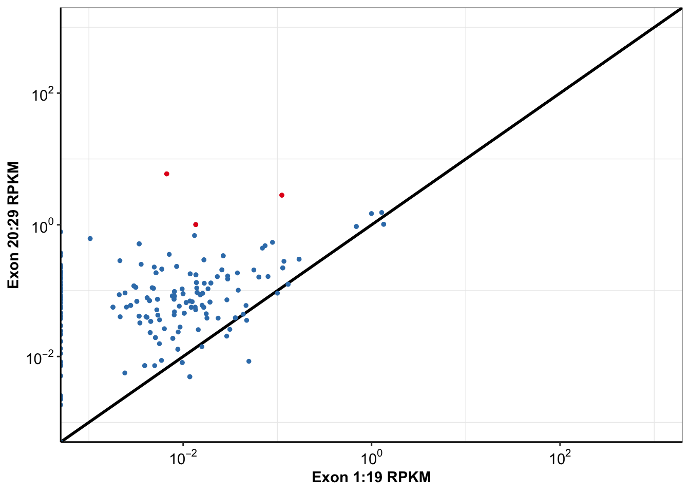

Last updated: 2019-03-06
workflowr checks: (Click a bullet for more information) ✔ R Markdown file: up-to-date
Great! Since the R Markdown file has been committed to the Git repository, you know the exact version of the code that produced these results.
✔ Environment: empty
Great job! The global environment was empty. Objects defined in the global environment can affect the analysis in your R Markdown file in unknown ways. For reproduciblity it’s best to always run the code in an empty environment.
✔ Seed:
set.seed(20190211)
The command set.seed(20190211) was run prior to running the code in the R Markdown file. Setting a seed ensures that any results that rely on randomness, e.g. subsampling or permutations, are reproducible.
✔ Session information: recorded
Great job! Recording the operating system, R version, and package versions is critical for reproducibility.
✔ Repository version: b7d812d
wflow_publish or wflow_git_commit). workflowr only checks the R Markdown file, but you know if there are other scripts or data files that it depends on. Below is the status of the Git repository when the results were generated:
Ignored files:
Ignored: .Rhistory
Ignored: .Rproj.user/
Untracked files:
Untracked: code/alldata_compiler.R
Untracked: code/contab_maker.R
Untracked: code/mut_excl_genes_datapoints.R
Untracked: code/mut_excl_genes_generator.R
Untracked: code/quadratic_solver.R
Untracked: code/simresults_generator.R
Untracked: data/All_Data_V2.csv
Untracked: data/alkati_growthcurvedata.csv
Untracked: data/alkati_growthcurvedata_popdoublings.csv
Untracked: data/alkati_melanoma_vemurafenib_figure_data.csv
Untracked: data/all_data.csv
Untracked: data/tcga_luad_expression/
Untracked: data/tcga_skcm_expression/
Untracked: docs/figure/Filteranalysis.Rmd/
Untracked: docs/figure/baf3_alkati_transformations.Rmd/
Untracked: output/alkati_filtercutoff_allfilters.csv
Untracked: output/alkati_luad_exonimbalance.pdf
Untracked: output/alkati_mtn_pval_fig2B.pdf
Untracked: output/alkati_skcm_exonimbalance.pdf
Untracked: output/all_data_luad.csv
Untracked: output/all_data_luad_egfr.csv
Untracked: output/all_data_skcm.csv
Untracked: output/baf3_alkati_figure_deltaadjusted_doublings.pdf
Untracked: output/baf3_barplot.pdf
Untracked: output/baf3_elisa_barplot.pdf
Untracked: output/egfr_luad_exonimbalance.pdf
Untracked: output/fig2b2_filtercutoff_atinras_totalalk.pdf
Untracked: output/fig2b_filtercutoff_atibraf.pdf
Untracked: output/fig2b_filtercutoff_atinras.pdf
Untracked: output/luad_alk_exon_expression.csv
Untracked: output/luad_egfr_exon_expression.csv
Untracked: output/melanoma_vemurafenib_fig.pdf
Untracked: output/skcm_alk_exon_expression.csv
x1=list.dirs("data/tcga_luad_expression/luad_mutation_data",full.names=TRUE)#Lists all files in the current working directory x
Data_list=list.files(x1[1],pattern="^TCGA-[A-Za-z0-9]{2}-[A-Za-z0-9]{4}-[A-Za-z0-9]{2}.hg19.oncotator.hugo_entrez_remapped.maf.txt*", ignore.case=F)#lists the files in the folder
patmat=matrix(nrow=length(Data_list),ncol=3)# This initializes the storage matrix
for (i in 1:length(Data_list)){
patdat=read.table(paste(x1,"/",Data_list[i],sep=""),stringsAsFactors=FALSE,header=TRUE, sep="\t",fill=TRUE,quote = "")#opens each file as the loop progresses
egfr=patdat%>%filter(Hugo_Symbol=="EGFR",Variant_Classification!="Silent")
kras=patdat%>%filter(Hugo_Symbol=="KRAS",Variant_Classification!="Silent")
#This essentially says that if you can't find the mutant, enter NaN. If you find two mutants, then search for the major transforming mutation (e.g. BrafV600E). Non of the >1 mutations are the transforming mutation, just select the first one
if(nrow(egfr)>=2){
if(egfr$Protein_Change%in%"p.T790M"){
egfr=egfr%>%filter(Protein_Change=="p.T790M")
} else{
egfr=egfr[1,]
}
} else if(nrow(egfr)==0){
egfr[1,]="p.NaN"
}
if(nrow(kras)>=2){
if(kras$Protein_Change%in%"p.G12D"){
kras=kras%>%filter(Protein_Change=="p.G12D")
} else{
kras=kras[1,]
}
} else if(nrow(kras)==0){
kras[1,]="p.NaN"
}
# missense=nrow(patdat[patdat$Variant_Classification=="Missense_Mutation",])#counts missense mutations by identifying the number of rows in a
patmat[i,1]=Data_list[i]#Record the Patient ID from the file name
patmat[i,2]=egfr$Protein_Change
patmat[i,3]=kras$Protein_Change
}Warning in if (egfr$Protein_Change %in% "p.T790M") {: the condition has
length > 1 and only the first element will be used
Warning in if (egfr$Protein_Change %in% "p.T790M") {: the condition has
length > 1 and only the first element will be used
Warning in if (egfr$Protein_Change %in% "p.T790M") {: the condition has
length > 1 and only the first element will be used
Warning in if (egfr$Protein_Change %in% "p.T790M") {: the condition has
length > 1 and only the first element will be used
Warning in if (egfr$Protein_Change %in% "p.T790M") {: the condition has
length > 1 and only the first element will be used
Warning in if (egfr$Protein_Change %in% "p.T790M") {: the condition has
length > 1 and only the first element will be used
Warning in if (egfr$Protein_Change %in% "p.T790M") {: the condition has
length > 1 and only the first element will be usedWarning in if (kras$Protein_Change %in% "p.G12D") {: the condition has
length > 1 and only the first element will be usedWarning in if (egfr$Protein_Change %in% "p.T790M") {: the condition has
length > 1 and only the first element will be used
Warning in if (egfr$Protein_Change %in% "p.T790M") {: the condition has
length > 1 and only the first element will be used
Warning in if (egfr$Protein_Change %in% "p.T790M") {: the condition has
length > 1 and only the first element will be usedpatframe=data.frame(patmat)#Turn storage matrix into data frame
colnames(patframe)[1:3]=c("Patid","EGFR","KRAS")#Rename the columns
# write.csv(patframe,"patients_tally_muttype2.csv")# Record data frame as a CSV and write to the working directory
#Grabbing Patient Names so that they can be used to merge with exon data later
alk_mutated_data=patframe
alk_mutated_data$Patid=substring(alk_mutated_data$Patid,first = 1,last = 12)
###Removing "p." from names of mutants:
alk_mutated_data$EGFR=unlist(sub("p.","",alk_mutated_data$EGFR))
alk_mutated_data$KRAS=unlist(sub("p.","",alk_mutated_data$KRAS))
head(alk_mutated_data) Patid EGFR KRAS
1 TCGA-05-4249 NaN G12C
2 TCGA-05-4382 R222L NaN
3 TCGA-05-4384 NaN NaN
4 TCGA-05-4389 NaN NaN
5 TCGA-05-4390 NaN G12V
6 TCGA-05-4395 NaN G12VLUAD Genes RSEM
rsemdatanormalized=read.table("data/tcga_luad_expression/luadrsemdata/gdac.broadinstitute.org_LUAD.Merge_rnaseqv2__illuminahiseq_rnaseqv2__unc_edu__Level_3__RSEM_genes_normalized__data.Level_3.2016012800.0.0/LUAD.rnaseqv2__illuminahiseq_rnaseqv2__unc_edu__Level_3__RSEM_genes_normalized__data.data.txt",sep = "\t",header = T,stringsAsFactors = F)
alk_rsem=data.frame(t(rsemdatanormalized[grepl("^alk\\|",rsemdatanormalized$Hybridization.REF,ignore.case = T),])[-1,])
#410 of the 577 patients have an RSEM higher than 410
colnames(alk_rsem)[1]="RSEM_normalized"
alk_rsem$Patid=rownames(alk_rsem)
#Standardizing Patid Names
alk_rsem$Patid=substring(alk_rsem$Patid,first = 1,last = 12)
alk_rsem$Patid=gsub("\\.","-",alk_rsem$Patid)
# # As Character
alk_rsem[colnames(alk_rsem)] <- lapply(alk_rsem[colnames(alk_rsem)],as.character)
# # As Numeric: Converting from list to numeric
alk_rsem$RSEM_normalized=unlist(alk_rsem$RSEM_normalized)
alk_rsem$RSEM_normalized=as.numeric(alk_rsem$RSEM_normalized)LUAD Count data:
#Non-normalized:
gene_expression_data=read.table("data/tcga_luad_expression/luadgeneexpression/gdac.broadinstitute.org_LUAD.Merge_rnaseq__illuminahiseq_rnaseq__unc_edu__Level_3__gene_expression__data.Level_3.2016012800.0.0/LUAD.rnaseq__illuminahiseq_rnaseq__unc_edu__Level_3__gene_expression__data.data.txt",sep = "\t",header = T,stringsAsFactors = F)
#Normalized
# gene_expression_data=read.table(,sep = "\t",header = T,stringsAsFactors = F)
#Finding Alk
alk_gene_exp=rbind(gene_expression_data[1,],gene_expression_data[grepl("^alk\\|",gene_expression_data$Hybridization.REF,ignore.case = T),])
#Removing Columns for Median_length_normalized and RPKM
t_alk_gene_exp=data.frame(t(alk_gene_exp[,grepl("raw_count",alk_gene_exp[1,])]))
#Counting patients with raw reads >500
# sum(as.numeric(as.numeric(as.character(t_alk_gene_exp$X580))>=500))
#ONLY 6 PATIENTS HAVE RAW COUNTS OF >500LUAD Exon RPKM This creates a .csv file and only needs to be run once.
# rm(list=ls())#Clears workspace
exondatacomb=read.table("data/tcga_luad_expression/luadexondatacomb/gdac.broadinstitute.org_LUAD.Merge_rnaseq__illuminahiseq_rnaseq__unc_edu__Level_3__exon_expression__data.Level_3.2016012800.0.0/LUAD.rnaseq__illuminahiseq_rnaseq__unc_edu__Level_3__exon_expression__data.data.txt",stringsAsFactors=FALSE,header=TRUE, sep="\t",fill=TRUE)
# head(exondatacomb)
#Chromosome 2
exondatachr2=exondatacomb[grep("^chr2:",exondatacomb$Hybridization.REF),] #i.e. it starts with chromosome 2
#Alk within Chromosome 2
# The exon locations were found on ensembl here https://useast.ensembl.org/Homo_sapiens/Transcript/Exons?db=core;g=ENSG00000171094;r=2:29192774-29921566;t=ENST00000389048
##These start at chr2:29415641-29416788:-
exondatachr2alk=exondatacomb[c(26031:26059),]
# # write.table(exondatachr2alk,'exondatachr2alk.csv')
# exondatachr2alk=read.csv("exondatachr2alk.csv",stringsAsFactors = F,header = T,sep = "",fill = T)
#Adding Names for Exons
exondatachr2alk$exon=c(29:1)
alldataalk=exondatachr2alk[,c(488,c(2:487))]
#Switching up order
alldataalk2=alldataalk[c(29:1),]
#Making the dataframe of a numeric type so that analysis can be carried out on it.
# As Character
alldataalk2[colnames(alldataalk2)] <- lapply(alldataalk2[colnames(alldataalk2)],as.character)
# As Numeric
alldataalk2[colnames(alldataalk2)] <- lapply(alldataalk2[colnames(alldataalk2)],as.numeric)
#Getting the correct column names for alldataalk2
# alldataalk2[1,]
colnames_exondata=exondatacomb[1,]
colnames(colnames_exondata)=colnames(alldataalk2)
alldataalk2=rbind(colnames_exondata,alldataalk2) #Adding first row that contains names of measurements such as RPKM, RSEM, Counts
write.table(alldataalk2,'output/luad_alk_exon_expression.csv')
#I used this code to find the length of exons and compare these to the lengths of the exons on Ensembl. I had to calculate exon lengths because annotations in this file and annotations in enseml weren't the same.
# trunc_names=gsub("chr2:|:\\+|:\\-","",exondatachr2$Hybridization.REF)
# ##Code to get the length of each exon:
# names=exondatachr2$Hybridization.REF
# trunc_names2=gsub("\\-","",trunc_names)
# trunc_names2=gsub("chr2:","",trunc_names)
# start=sapply(strsplit(trunc_names,"-"),"[",1)
# end=sapply(strsplit(trunc_names,"-"),"[",2)
# positions=data.frame(start,end,names)
# positions[,c(1,2)]=lapply(positions[,c(1,2)],as.character)
# positions[,c(1,2)]=lapply(positions[,c(1,2)],as.numeric)
# positions$net=positions$end-positions$startalldataalk2=read.csv("output/luad_alk_exon_expression.csv",stringsAsFactors = F,header = T,sep = "",fill = T)
#Getting Count Data
alldataalk2_count=cbind(alldataalk2$exon,alldataalk2[,grepl("raw_counts",alldataalk2[1,])])[-1,]
# As Character
alldataalk2_count[colnames(alldataalk2_count)] <-lapply(alldataalk2_count[colnames(alldataalk2_count)],as.character)
# As Numeric
alldataalk2_count[colnames(alldataalk2_count)] <- lapply(alldataalk2_count[colnames(alldataalk2_count)],as.numeric)
#Sum exons 1:29
alk_count_data=data.frame(t(data.frame(lapply(alldataalk2_count[c(1:29),],sum))[,-1])) #Not sure if lapply is the right thing to use here. Really messed up way of summing indices in dataframe
colnames(alk_count_data)="mRNA_count"
alldataalk2_medianlength=cbind(alldataalk2$exon,alldataalk2[,grepl("median_length",alldataalk2[1,])])
# As Character
alldataalk2_medianlength=alldataalk2_medianlength[-1,] #Removing the first row. May be unnecessary in the future
alldataalk2_medianlength[colnames(alldataalk2_medianlength)] <- lapply(alldataalk2_medianlength[colnames(alldataalk2_medianlength)],as.character)
# As Numeric
alldataalk2_medianlength[colnames(alldataalk2_medianlength)] <- lapply(alldataalk2_medianlength[colnames(alldataalk2_medianlength)],as.numeric)
#Sum exons 1:29
alk_medianlength_data=data.frame(t(data.frame(lapply(alldataalk2_medianlength[c(1:29),],sum))[,-1])) #Removing sum of exons lol
colnames(alk_medianlength_data)="medianlength"
#Getting RPKM
alldataalk2_RPKM=cbind(alldataalk2$exon,alldataalk2[,grepl("RPKM",alldataalk2[1,])])
# As Character
alldataalk2_RPKM=alldataalk2_RPKM[-1,] #Removing the first row. May be unnecessary in the future
alldataalk2_RPKM[colnames(alldataalk2_RPKM)] <- lapply(alldataalk2_RPKM[colnames(alldataalk2_RPKM)],as.character)
# As Numeric
alldataalk2_RPKM[colnames(alldataalk2_RPKM)] <- lapply(alldataalk2_RPKM[colnames(alldataalk2_RPKM)],as.numeric)
alk_RPKM_data=data.frame(cbind(lapply(alldataalk2_RPKM[c(1:19),],mean),lapply(alldataalk2_RPKM[c(20:29),],mean))[-1,])
colnames(alk_RPKM_data)=c("mean_RPKM_1.19","mean_RPKM_20.29")
# As Character
alk_RPKM_data[colnames(alk_RPKM_data)] <- lapply(alk_RPKM_data[colnames(alk_RPKM_data)],as.character)
# As Numeric
alk_RPKM_data[colnames(alk_RPKM_data)] <- lapply(alk_RPKM_data[colnames(alk_RPKM_data)],as.numeric)
# Calculating Ratios of exon RPKM means
alk_RPKM_data$Ratio20.29=alk_RPKM_data$mean_RPKM_20.29/alk_RPKM_data$mean_RPKM_1.19
#Changing rownames (patient_ids) to become the same between each other
rownames(alk_RPKM_data)=substring(rownames(alk_RPKM_data),first=1,last=28)
rownames(alk_medianlength_data)=substring(rownames(alk_medianlength_data),first=1,last=28)
alk_RPKM_data$Patid=rownames(alk_RPKM_data)
alk_medianlength_data$Patid=rownames(alk_medianlength_data)
alk_count_data$Patid=rownames(alk_count_data)
mergetemp=merge(alk_RPKM_data,alk_count_data,by="Patid")
alk_exon_data=merge(mergetemp,alk_medianlength_data,by="Patid")
#Transforming the Patids so that they're compatible with the Patids in the mutation data
alk_exon_data$Patid=substring(alk_exon_data$Patid,first = 1,last = 12)
#Since the names for exon data are not the same format as the mutation data, we're gonna change that here
alk_exon_data$Patid=gsub("\\.","-",alk_exon_data$Patid)
alkati_merged_data=merge(alk_exon_data,alk_mutated_data,by="Patid",all=T)
alkati_merged_data=merge(alkati_merged_data,alk_rsem,by="Patid",all = T)
# alkati_merged_data=merge(alk_exon_data,alk_mutated_data,by="Patid")
# alkati_merged_data=merge(alkati_merged_data,alk_rsem,by="Patid")
###Now adding ALK hits to the data based on filters by Wiesner et al
###2/15 note: use the TCGA data sorter to just process your data
# alk_data=read.csv("../data/all_data.csv",stringsAsFactors = F)
# alldata=tcgadatasorter("data/all_data.csv",meanRPKM,100,500)
alkati_merged_data_alkati=alkati_merged_data%>%
group_by(Patid,mean_RPKM_1.19,mean_RPKM_20.29,Ratio20.29, mRNA_count,EGFR,KRAS,RSEM_normalized)%>%
summarize(ATI=as.numeric(mRNA_count>=100&Ratio20.29>10&RSEM_normalized>=80)[1])
write.csv(alkati_merged_data_alkati,"output/all_data_luad.csv")Making ALK Expression the plots:
alkati_merged_data=read.csv("output/all_data_luad.csv")
alkati_merged_data$alkati=0
alkati_merged_data$alkati[alkati_merged_data$Ratio>=10&alkati_merged_data$mRNA_count>=500&alkati_merged_data$RSEM_normalized>=80]=1
alkati_merged_data$alkati=factor(alkati_merged_data$alkati,levels=c("1","0"))
ggplot(alkati_merged_data,aes(x=mean_RPKM_1.19, y=mean_RPKM_20.29,color=factor(alkati)))+
geom_abline(size=1)+
geom_point(size=4)+
####Had to add this line to not overplot the alkati datapoint- Haider 1/31/19
geom_point(data=alkati_merged_data[alkati_merged_data$alkati==1,],aes(x=mean_RPKM_1.19, y=mean_RPKM_20.29,color=factor(alkati)),size=4)+
scale_x_continuous(trans = "log10",name="Exon 1:19 RPKM",breaks=c(1e-2,1e0,1e2),labels = parse(text = c("10^-2","10^0","10^2")),limits = c(1e-3,1e3))+
scale_y_continuous(trans = "log10",name="Exon 20:29 RPKM",breaks=c(1e-2,1e0,1e2),labels = parse(text = c("10^-2","10^0","10^2")),limits = c(1e-3,1e3))+
scale_color_brewer(palette="Set1",name="ALKATI",labels=c("Yes", "No"))+
cleanup+
theme(plot.title = element_text(hjust=.5),
text = element_text(size=24,face = "bold"),
axis.title = element_text(face="bold",size="24"),
axis.text=element_text(face="bold",size="24",colour = "black"))+
theme(legend.key.size = unit(30,"pt"))Warning: Transformation introduced infinite values in continuous x-axisWarning: Transformation introduced infinite values in continuous y-axisWarning: Removed 391 rows containing missing values (geom_point).
| Version | Author | Date |
|---|---|---|
| 0b5f5cb | haiderinam | 2019-02-19 |
ggsave("output/alkati_luad_exonimbalance.pdf",width =12 ,height =10 ,units = "in",useDingbats=F)Warning: Transformation introduced infinite values in continuous x-axisWarning: Transformation introduced infinite values in continuous y-axisWarning: Removed 391 rows containing missing values (geom_point).#Testing if both kinase and ALK expression are different
ks.test(alkati_merged_data$mean_RPKM_1.19,alkati_merged_data$mean_RPKM_20.29)Warning in ks.test(alkati_merged_data$mean_RPKM_1.19,
alkati_merged_data$mean_RPKM_20.29): p-value will be approximate in the
presence of ties
Two-sample Kolmogorov-Smirnov test
data: alkati_merged_data$mean_RPKM_1.19 and alkati_merged_data$mean_RPKM_20.29
D = 0.65401, p-value < 2.2e-16
alternative hypothesis: two-sided###We observed a significant difference between the distribution for the 20-29 exons and the 1-19 exons The reported p-value was 2-16.#Testing if both kinase and ALK expression are different
ks.test(alkati_merged_data$mean_RPKM_1.19,alkati_merged_data$mean_RPKM_20.29)Warning in ks.test(alkati_merged_data$mean_RPKM_1.19,
alkati_merged_data$mean_RPKM_20.29): p-value will be approximate in the
presence of ties
Two-sample Kolmogorov-Smirnov test
data: alkati_merged_data$mean_RPKM_1.19 and alkati_merged_data$mean_RPKM_20.29
D = 0.65401, p-value < 2.2e-16
alternative hypothesis: two-sided###We observed a significant difference between the distribution for the 20-29 exons and the 1-19 exons The reported p-value was 2-16.
###The p-value from a Chi-sq test was 2.2e-16 too
#for all ALK data, not ALKATI
ov_expr_obs=c(sum(as.numeric(alkati_merged_data$Ratio20.29>1),na.rm = T),
dim(alkati_merged_data)[1]-sum(as.numeric(alkati_merged_data$Ratio20.29>1),na.rm = T))
ov_expr_expected=c(round(dim(alkati_merged_data)[1]/2),
round(dim(alkati_merged_data)[1]/2))
overexpression=data.frame(rbind(ov_expr_obs,ov_expr_expected))
colnames(overexpression)=c("Yes","No")
chisq.test(overexpression)
Pearson's Chi-squared test with Yates' continuity correction
data: overexpression
X-squared = 27.652, df = 1, p-value = 1.452e-07sessionInfo()R version 3.5.2 (2018-12-20)
Platform: x86_64-apple-darwin15.6.0 (64-bit)
Running under: macOS Mojave 10.14.3
Matrix products: default
BLAS: /Library/Frameworks/R.framework/Versions/3.5/Resources/lib/libRblas.0.dylib
LAPACK: /Library/Frameworks/R.framework/Versions/3.5/Resources/lib/libRlapack.dylib
locale:
[1] en_US.UTF-8/en_US.UTF-8/en_US.UTF-8/C/en_US.UTF-8/en_US.UTF-8
attached base packages:
[1] parallel grid stats graphics grDevices utils datasets
[8] methods base
other attached packages:
[1] bindrcpp_0.2.2 ggsignif_0.4.0 usethis_1.4.0
[4] devtools_2.0.1 RColorBrewer_1.1-2 reshape2_1.4.3
[7] ggplot2_3.1.0 doParallel_1.0.14 iterators_1.0.10
[10] foreach_1.4.4 dplyr_0.7.8 VennDiagram_1.6.20
[13] futile.logger_1.4.3 workflowr_1.1.1 tictoc_1.0
[16] knitr_1.21
loaded via a namespace (and not attached):
[1] tidyselect_0.2.5 xfun_0.4 remotes_2.0.2
[4] purrr_0.3.0 colorspace_1.4-0 htmltools_0.3.6
[7] yaml_2.2.0 rlang_0.3.1 pkgbuild_1.0.2
[10] R.oo_1.22.0 pillar_1.3.1 glue_1.3.0
[13] withr_2.1.2 R.utils_2.7.0 sessioninfo_1.1.1
[16] lambda.r_1.2.3 bindr_0.1.1 plyr_1.8.4
[19] stringr_1.3.1 munsell_0.5.0 gtable_0.2.0
[22] R.methodsS3_1.7.1 codetools_0.2-16 evaluate_0.12
[25] memoise_1.1.0 callr_3.1.1 ps_1.3.0
[28] Rcpp_1.0.0 backports_1.1.3 scales_1.0.0
[31] formatR_1.5 desc_1.2.0 pkgload_1.0.2
[34] fs_1.2.6 digest_0.6.18 stringi_1.2.4
[37] processx_3.2.1 rprojroot_1.3-2 cli_1.0.1
[40] tools_3.5.2 magrittr_1.5 lazyeval_0.2.1
[43] tibble_2.0.1 futile.options_1.0.1 crayon_1.3.4
[46] whisker_0.3-2 pkgconfig_2.0.2 prettyunits_1.0.2
[49] assertthat_0.2.0 rmarkdown_1.11 R6_2.3.0
[52] git2r_0.24.0 compiler_3.5.2 This reproducible R Markdown analysis was created with workflowr 1.1.1